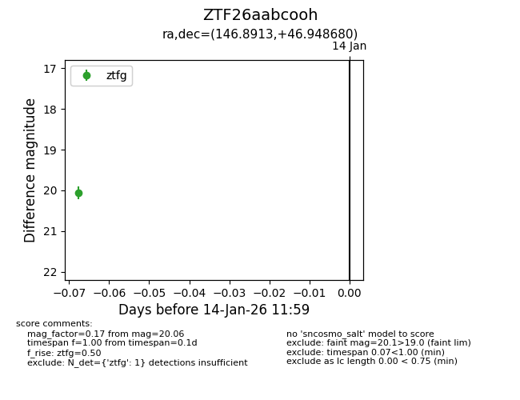
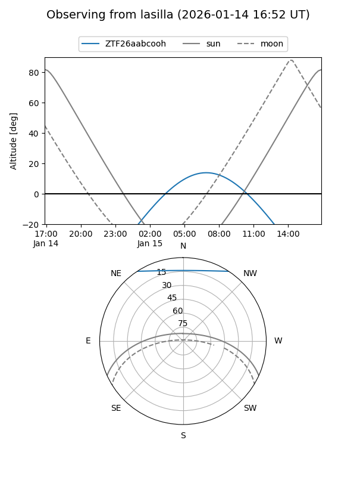
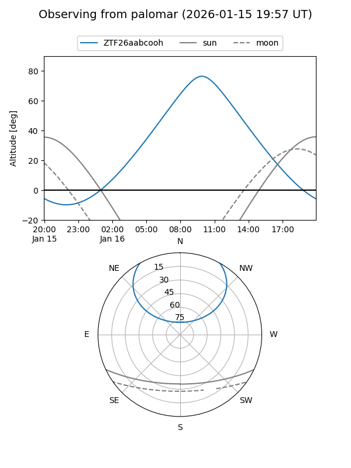

ZTF26aabcooh
Target ZTF26aabcooh at 2026-01-16 12:05
Aliases and brokers:
FINK: link
Lasair: link
ALeRCE: link
alt names
ZTF26aabcooh (ztf,fink_ztf)
Coordinates:
equatorial (ra, dec) = 146.8913,+46.94868
equatorial (HMS+DMS) = 09:47:33.90,+46:56:55.25
galactic (l, b) = (171.4466,+49.06829)
Flags:
Photometry:
last ztfg=20.06
1 ztfg detections
Lightcurve

Visibility


Additional plots